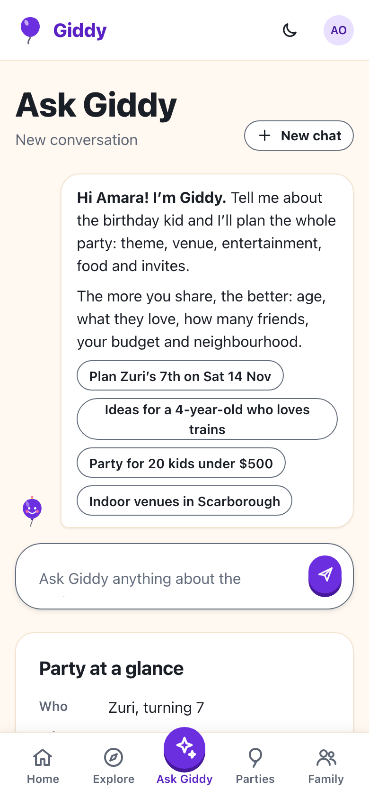
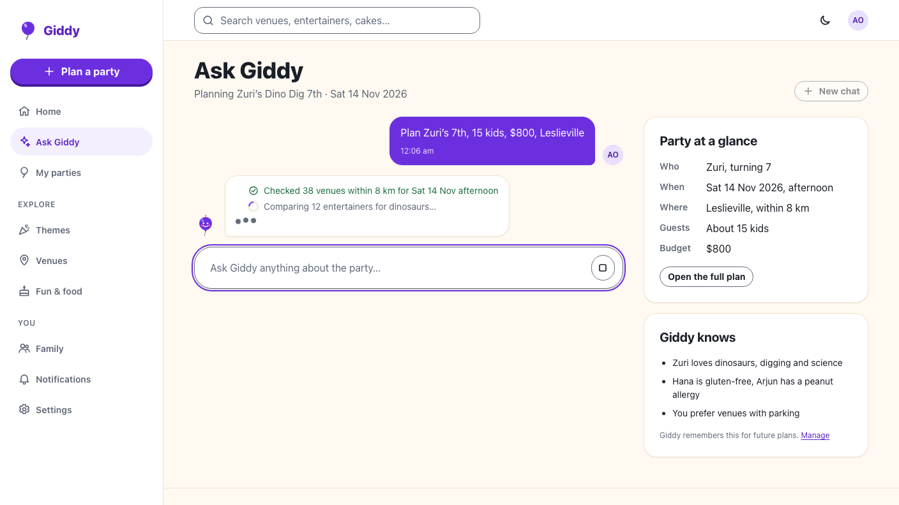
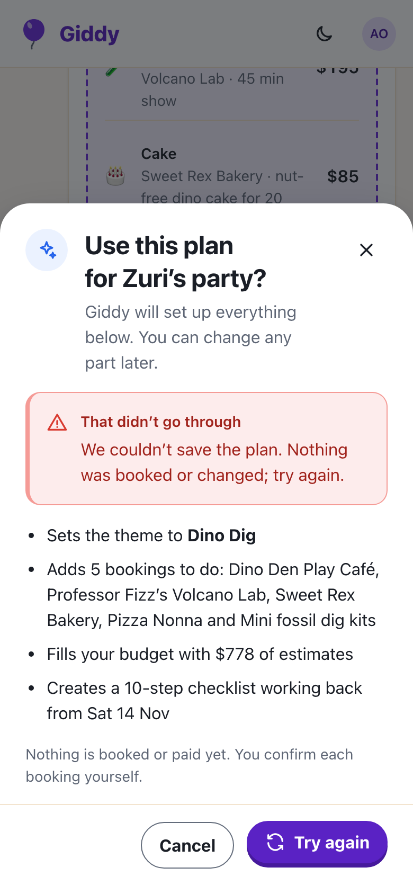

Visible work, grounded plans, confirmation and memories

Steps tick as each search finishes; the plan card totals $778 of $800.


| Rule | Where |
|---|---|
| Names and prices filled from the catalogue | ProposePlanTool |
| Only this turn's results, free that day, in the area, big enough | ProposalValidator |
| Allergy conflicts flagged on the card | ProposalItem.AllergyNote |
| Listing text quoted, instructions removed | ToolResultSanitizer |
| No book, pay, send or contact tools | 9 read-or-prepare tools |
| Prompts, tool calls and replies kept 90 days | TurnLogs |
Stop answers within a second; finished steps stay. Up to four replies in the parent's voice.
Send again or Edit message; a model outage says so within 10 seconds.
One family only; never contact or payment details. Forget deletes it for the next turn.
A scripted model drives real turns: steps, priced proposals, rejections, allergy flags, injection, Stop, outages, memories and roles.
The chat, plan and dialog against a fake API at 360 and 1280px, with axe on each state.
Next: start a party plan